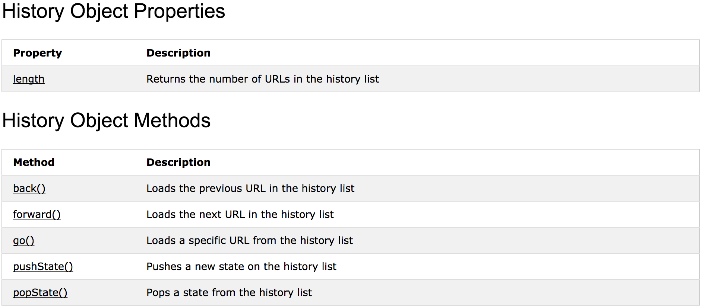
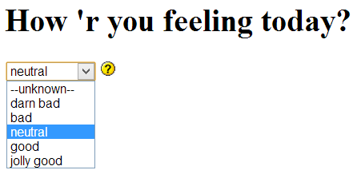

Web Programming on Servers and Devices [OGI03v]
08. Javascript
DOM
08.1
Introduction
Document Object Model: Intro (1)
The Document Object Model (DOM) is the data representation of the objects that comprise the structure and content web page, such that it can be inspected/manipulated by a Javascript program
Document Object Model: Intro (2)
Document Object Model: Intro (3)
- Nodes → ~ HTML tags
- Nodes have properties: classList, innerText, innerHTML, children, id, attributes...
- Nodes (can) have event handlers attached
08.2
Exploring the BOM & the DOM
Browser Object Model
-
consists of objects that deal with the browser:
windowand its child objectsnavigator,history,screen,locationanddocument documentis the DOM-
Some interesting parts:

Nodes of the BOM/DOM
- Nodes can be an element or collection of elements.
-
Each element of the tree has
- properties like
width,value,srcetc... (some are read/write, others are read only) - methods like
submit(),focus()etc.. (which are actually properties too) - events like
onclick,onchange,onloadetc...
- properties like
-
The list is different for each element:
- the available properties, functions and events depend on node type (image, input...)
- the values of the properties depend on the state of the node
- almost all events are fired because of user interaction
- The best hands-on DOM reference I know is W3Schools
DOM & BOM Documentation
Window (1)

Window (2)
→ full listing hereWindow (3)
-
Using properties:
console.log('kader: ' + window.innerWidth + 'x' + window.innerHeight); -
Using Methods:
window.alert('hi'); window.scrollTo(0, 1200); if (window.confirm('print this page?')) window.print(); -
As
windowis the root of any path, you may omit this:console.log('kader: ' + innerWidth + 'x' + innerHeight); alert('hi'); scrollTo(0, 1200); if (confirm('print this page?')) print();
History (1)

History (2)
 → full listing hereHistory (3)
-
You are not supposed to mess with browser history:
history.back(); // don't use this! -
Since HTML5 this node contains some interesting new methods like
pushState()andpopState(), which can be used to maintain browsing history logic in rich Javascript applications.
Location (1)

Location (2)
 → full listing here
→ full listing here
Location (3)
-
Refers to the address bar. Example forcing a redirect:
location.href = 'http://www.google.be'; -
Return page hash:
console.log(location.hash); -
Reload the page:
location.reload();
Document (1)

Document (2)
→ full listing hereDocument (3)
-
This node carries the entire HTML document. The node itself is rather uninteresting, with only a few properties and methods (apart from the selector functions we'll talk about in a minute):
document.title = "hello there";document.write('kot kot kedei'); // beware: this page will be overwritten
Finding an element (1)

Finding an element (2)
-
Find individual elements by id or by CSS selector:
// get element by its id const button1 = document.getElementById('btnOk'); // get first element matched by CSS selector const el = document.querySelector('#siteWrapper pre.bigger:last'); -
You can search inside any element, not just
document:// find menu wrapper const wrapper = document.getElementById('#menuWrapper'); // find active link inside wrapper const activeLink = wrapper.querySelector('#siteWrapper li.active a');
Collections of elements (1)
Collections of elements (2)
-
Find multiple elements — collections — by CSS selector:
// find all images within gallery const galleryImgs = document.querySelectorAll('#myGallery img'); // find all checked checkboxes const inpChecked = document.querySelectorAll('input[type=checkbox]:checked'); -
Treat collections as classic arrays:
// find all elements with a src attribute const srcElements = document.querySelectorAll('*[src]'); // access third element console.log(srcElements[2]); // iterate with normal for-loop for (let i = 0; i < srcElements.length; i++) { console.log(srcElements[i].nodeName + ': ' + srcElements[i].src); }
Collections of elements (3)
-
Alas, properties do not distribute:
// find images const galleryImgs = document.querySelectorAll('pre.bigger code'); // set opacity of all to 0.8 -> does not work! galleryImgs.style.opacity = '0.8'; -
You will have to iterate manually:
// find images const galleryImgs = document.querySelectorAll('pre.bigger code'); // set opacity one by one -> works for (let i = 0; i < galleryImgs.length; i++) { galleryImgs[i].style.opacity = '0.5'; }
08.3
Manipulating the DOM
DOM documentation
- Most interesting properties and methods for DOM Elements: → full listing here
DOM documentation
- For individual elements, additional properties and methods exist, e.g. for DOM Input Checkbox: → full listing here
Manipulating CSS and content
-
Some of the common properties and events for elements:
// cache the variable const el = document.getElementById('manipulatingDemo'); // change CSS properties (note: camelCased!) el.style.backgroundColor = '#cc6'; el.style.padding = '20px'; // set 'test' as classname el.className = 'test'; // or better: el.classList.add('test'); el.innerHTML = 'I am THE demo'; // add some events el.addEventListener('mouseover', function() { this.innerHTML = 'Hammertime'; }); el.addEventListener('mouseout', function() { this.innerHTML = 'Can\'t touch this'; });I am the demo
To run the demo, click 'run' first, then hover over the 'I am the demo' text below
Manipulating properties
-
There's a wide variety of elements: images, links, buttons, divs... Each may have its own additional properties, events and methods. Some examples:
<form id="demoForm1"> <label>Yes/no: <input type="checkbox" name="chb1" id="chb1" /></label>; </form> <img src="assets/08/me.jpg" id="img1" width="40" height="40" />document.getElementById('chb1').checked = true;document.getElementById('img1').width = 20;
- Again, w3schools.com has an excellent DOM reference
Manipulating properties
-
You may still dig your way through the full-blown DOM scheme the old-fashioned way:
let button1 = document.forms.form1.btnOk; let image2 = document.images[1]; let numLinks = document.links.length; - There's nothing really really wrong with this syntax — and it's lightning fast — but for simplicity you might want to stick with our five selector functions.
Add your own properties
-
DOM elements are regular Javascript objects, so you can extend it with your own properties. A quick example:
<input type="button" value="button" /> <input type="button" value="button" /> <input type="button" value="button" />// find buttons const buttons = document.querySelectorAll('input[value=button]'); // add event function to prevent closures (see 01_syntax.html#/51) const addClickEvent = function(btn) { btn.addEventListener('click', function() { if (!this.numClicks) this.numClicks = 0; // glue a number to the button this.numClicks++; // increment number of clicks console.log(this.numClicks + ' times clicked'); }); }; // iterate over buttons adding click events for (let i = 0; i < buttons.length; i++) { addClickEvent(buttons[i]); }
To run the demo, click 'run' first to attach all events, then click the buttons multiple times in any order
08.4
Event handling
Events — documentation
→ full listing hereAttaching events
-
Some examples:
const par = document.getElementById('eventsDemo'); par.addEventListener('click', function() { console.log('You clicked me!'); }); par.addEventListener('mouseover', function() { this.style.backgroundColor = '#333'; this.style.color = 'white'; }); par.addEventListener('mouseout', function() { this.style.backgroundColor = ''; this.style.color = 'green'; });I am the demo
- event names are used without 'on', e.g. 'onclick' becomes 'click'
To run the demo, click 'run' first, then click on the 'I am the demo' text below
Attaching events
-
You can listen for the same event more than once:
const par = document.getElementById('eventsDemo2'); par.addEventListener('click', function() { console.log('You clicked me (1)!'); }); par.addEventListener('click', function() { console.log('You clicked me (2)!'); });I am the demo
To run the demo, click 'run' first, then click on the 'I am the demo' text below
Attaching events
-
You may also run across the older syntax for event hooking (notice onclick instead of click):
document.getElementById('btn1').onclick = function() { ... }; - This syntax does not allow hooking more than once or removing listeners, so don't use it.
Removing events
-
You can also remove an event, but only if the attached function has a name:
const par = document.getElementById('eventsDemo3'); const clickHandler1 = function() { console.log('This is the first handler'); }; const clickHandler2 = function() { console.log('This is the second handler'); this.removeEventListener('click', clickHandler1); }; par.addEventListener('click', clickHandler1); par.addEventListener('click', clickHandler2);I am the demo
To run the demo, click 'run' first, then click on the 'I am the demo' text below multiple times
Event bubbling
-
What happens if two or more nested elements handle the same event:
<div id="nDemo"> <a href="#"><img src="assets/08/me.jpg" alt=""></a> </div>document.querySelector('#nDemo').addEventListener('click', function() { console.log('div clicked'); }); document.querySelector('#nDemo img').addEventListener('click', function() { console.log('img clicked'); }); document.querySelector('body').addEventListener('click', function() { console.log('body clicked'); }); document.querySelector('#nDemo a').addEventListener('click', function() { console.log('a clicked'); });
Prevent the default
- All events are executed from inside to outside, and finally the default browser action is executed: event bubbling.
-
If you just want to prevent the browser action, call
preventDefault()anywhere along the route:<div id="nDemo"> <a href="https://www.google.be/"><img src="assets/08/me.jpg" alt=""></a> </div>... document.querySelector('#nDemo a').addEventListener('click', function(e) { console.log('a clicked'); e.preventDefault(); });
Stop bubble propagation
-
If you want to stop bubbling, call
stopPropagation():... document.querySelector('#nDemo a').addEventListener('click', function(e) { console.log('a clicked'); e.stopPropagation(); }); -
If you want to stop both, call both:
... document.querySelector('#nDemo a').addEventListener('click', function(e) { console.log('a clicked'); e.stopPropagation(); e.preventDefault(); });
Event object properties
→ full listing here
Note: events should be used without 'on', e.g. window.addEventListener('load', ...)
Example: target
-
At any time during bubbling you can know which top element was clicked (even if it doesn't handle the event):
... document.querySelector('body').addEventListener('click', function(e) { console.log(e.target.tagName + ' clicked'); }); -
Say you have a table with 1000 cells; instead of binding 1000 events, thanks to bubbling it's possible to bind a single handler on the <table> itself, which saves memory.
const table = document.querySelector('#bubbling'); table.addEventListener('click', function(e) { console.log('click was on ' + e.target.innerHTML); });1 2 3 4 5 6
Example: mouse
-
The
eparameter of the event listener contains information of the event. An example for mouse events:<input type="button" id="btn1" value="Left or right click me"> <script> document.getElementById('btn1').addEventListener('mousedown', function(e) { const right = e.button && e.button == 2; console.log('You clicked ' + (right ? 'right' : 'left') + ' on position (' + e.pageX + ',' + e.pageY + ')'); }); </script> - Browser incompatibility may occur.
Example: keyboard
-
An example for keyboard events:
<p>type something...</p> <input type="text" id="inp1" /> <script> document.getElementById('inp1').addEventListener('keypress', function(e) { console.log('You pressed ' + (e.shiftKey ? 'Shift-' : '') + e.key + ', code ' + e.keyCode); }); </script> - Browser incompatibility may occur.
08.5
Initializing scripts
The wrong way
-
Beware that scripts are executed when loaded, even if the rest of the page is still loading. This won't work;
<html> <head> <script> document.getElementById('span1').innerHTML = 'hello there'; </script> </head> <body> ... <span id="span1"></span> ... </body> </html>
The better way (1)
-
Put your scripts at the bottom:
<html> <head> </head> <body> ... <span id="span1"></span> ... <script> document.getElementById('span1').innerHTML = 'hello there'; </script> </body> </html> - Executes when HTML and CSS is loaded, but does not wait for images etc... to load
The better way (2)
-
A little cleaner with an external script:
<html> <body> ... <span id="span1"></span> <script src="js/pagescripts.js"></script> </body> </html>document.getElementById('span1').innerHTML = 'hello there';
Window DOMContentLoaded event
-
If you wish to start your scripts when the document has been parsed, use the window DOMContentLoaded event:
<html> <body> ... <span id="span1"></span> <script src="js/pagescripts.js"></script> </body> </html>window.addEventListener('DOMContentLoaded', function() { document.getElementById('span1').innerHTML = 'hello there'; });
Script Encapsulation
-
Script encapsulation with self invoking function (strict mode):
;(function() { 'use strict'; // variables let var1, var2, var3; // function 1 const function1 = function() { ... }; // function 2 const function2 = function() { ... }; // start your engines! window.addEventListener('DOMContentLoaded', function() { // bind events here using functions and variables above // ... }); })();
- simple way to encapsulate your variables in strict mode
- we will use this one mostly during lab sessions
Note the semicolon at the start: when scripts are compressed, they are often concatenated. Putting an extra semicolon prevents errors, should a previous script have forgotten a semicolon at the end.
08.6
Demo — Mood selector

The HTML
-
The HTML:
<!DOCTYPE html> <html> <head> <title>Moodselector</title> <meta charset="utf-8" /> <script src="js/scripts.js"></script> </head> <body> <h1>How 'r you feeling today?</h1> <form id="testForm" action="#"> <select name="lstMood" id="selMood"> <option value="0">--unknown--</option> <option value="1">darn bad</option> <option value="2">bad</option> <option value="3">neutral</option> <option value="4">good</option> <option value="5">jolly good</option> </select> <img src="img/mood0.gif" alt="mood icon" id="imgMood" /> </form> </body> </html>
Linking the script
- We'll write a simple mood selector, where selecting a value in the list changes the smiley next to it
-
We link our scripts at the end of the body:
<!DOCTYPE html> <html> <head> <title>Moodselectior</title> ... </head> <body> ... <script src="js/scripts.js"></script> </body> </html>
List change event
-
In
scripts.jswe'll hook a functionsetMoodon the change event of the list;(function() { 'use strict'; // wait till DOM is loaded window.addEventListener('DOMContentLoaded', function() { // listen to select list changes document.getElementById('lstMood').addEventListener('change', function() { setMood(this.value); }); }); })();
Adjusting the image
-
The function
setMoodis quite simple://... const setMood = function(nr) { // check boundaries if (nr < 0) nr = 0; if (nr > 5) nr = 5; // adjust image document.getElementById('imgMood').src = 'img/mood' + nr + '.gif'; //... }
08.7
Demo — Slideshow

HTML only version
-
We'll start from a HTML-only slideshow with a HTML file for each picture. The HTML for the first:
<!DOCTYPE html> <html> <head> <title>Show photo | Slideshow</title> <meta charset="utf-8" /> <link rel="stylesheet" href="css/reset.css" /> <link rel="stylesheet" href="css/main.css" /> </head> <body> <h2>Bekijk foto's</h2> <ul id="thumbsmenu"> <li><a href="photo1.html"><img src="img/photo1S.jpg" alt="photo 1" /></a></li> <li><a href="photo2.html"><img src="img/photo2S.jpg" alt="photo 2" /></a></li> <li><a href="photo3.html"><img src="img/photo3S.jpg" alt="photo 3" /></a></li> <li><a href="photo4.html"><img src="img/photo4S.jpg" alt="photo 4" /></a></li> </ul> <p><img src="img/photo1L.jpg" alt="photo 1" id="photoBig" /></p> </body> </html>
Linking the script
- Each time the user selects a new picture, a new page needs to be loaded. Let's improve the user experience with some Javascript.
-
Again we link our script in the body:
<!DOCTYPE html> <html> <head> <title>Slideshow</title> ... </head> <body> ... <script src="js/scripts.js"></script> </body> </html>
Selecting all links
-
In
scripts.jswe'll select all links with a query selector:;(function() { 'use strict'; // wait till DOM is loaded window.addEventListener('DOMContentLoaded', function() { const imglinks = document.querySelectorAll('#thumbsmenu li>a'); for let i = 0; i < imglinks.length; i++) { imglinks[i].addEventListener('click', function(e) { // find thumb image inside link const img = this.querySelector('img'); // show large version // ... }); }); })();
Click events
-
The rest isn't that complicated; I'm sure you can figure this out:
// shows large image when lnk has been clicked const showImage = function(lnk) { // find thumb image const img = lnk.querySelector('img'); // find big image const photoBig = document.getElementById('photoBig'); photoBig.src = img.src.replace('S.jpg', 'L.jpg'); photoBig.alt = img.alt; } // start scripts window.addEventListener('DOMContentLoaded', function() { const imglinks = document.querySelectorAll('#thumbsmenu li>a'); for (let i = 0; i < imglinks.length; i++) { imglinks[i].addEventListener('click', function(e) { // prevent default e.preventDefault(); // show image showImage(this); }); } });
Custom attributes
-
We can improve a little on the fexibility of our code by using a custom attribute
data-src-l:<!DOCTYPE html> <html> <head> <title>Show photo | Slideshow</title> <meta charset="utf-8" /> <link rel="stylesheet" href="css/reset.css" /> <link rel="stylesheet" href="css/main.css" /> </head> <body> <h2>Bekijk foto's</h2> <ul id="thumbsmenu"> <li><a href="photo1.html"><img data-src-l="img/photo1L.jpg" src="img/photo1S.jpg" alt="photo 1" /></a></li> <li><a href="photo2.html"><img data-src-l="img/photo2L.jpg" src="img/photo2S.jpg" alt="photo 2" /></a></li> <li><a href="photo3.html"><img data-src-l="img/photo3L.jpg" src="img/photo3S.jpg" alt="photo 3" /></a></li> <li><a href="photo4.html"><img data-src-l="img/photo4L.jpg" src="img/photo4S.jpg" alt="photo 4" /></a></li> </ul> <p><img src="img/photo1L.jpg" alt="photo 1" id="photoBig" /></p> </body> </html>
Custom attributes
-
Now the source for the large versions is given by the server, which is much cleaner than the ugly
...S.jpgto...L.jpgreplace trickconst showImage = function(lnk) { ... photoBig.src = img.getAttribute('data-src-l'); ... };